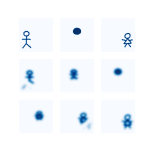

Una animación es una secuencia de objetos estáticos que dan la ilusión de movimiento. Para generar una animación suave desde un objeto \(F_0\) a un objeto \(F_1\) toca producir mucho objetos estáticos intermedios. En este espacio exploraremos si tal esfuerzo puede ser reducido al usar pocos puntos de control que guíen el movimiento del objeto \(F_0\) al objeto \(F_1\), similar a como funciona una curva de Bezier en el plano o los keyframes. En específico, consideremos \(F_0\) y \(F_1\) sólidos en \(\mathbb R^2=X\). A estos les podemos asociar medidas de probabilidad haciendo la asociación \[ F_i \in \text{ sólidos en } X \leftrightarrow \frac{1}{\lvert F_i \rvert} \mathbf 1_{F_0} =: \mu_i \in \mathcal P(X). \] Dicho lo anterior, sean \(\mu_0, \mu_1, \ldots, \mu_k\) figuras en \(X\), donde \(\mu_0\) representa la posición inicial y \(\mu_k\) la final. Buscamos un camino de figuras parametrizado por una función \(\alpha \colon [0,1] \to (\mathcal P)^k\). En principio, podríamos tomar una ponderación ``euclideana’’ \[ \mu_t = \alpha_0(t) \mu_0 + \cdots + \alpha_k(t) \mu_k, \] sin embargo, esta no es la noción adecuada. En efecto, si tomamos \(\delta_x\) y \(\delta_y\), entonces su promedio es \((\delta_x + \delta_y)/2\) en vez de \(\delta_{(x+y)/2}\) que es lo se esperaría al mover la figura. Resulta que el problema a resolver es \[ \mu_t = \textup{argmin}_{\nu} \sum_{j=0}^{k} \alpha_j(t) W_2^2(\mu_j, \nu) \] donde \(W_2\) denota la distancia de Wasserstein definida más adeltante.
Organización del documento Comenzamos dando una paseo por el transporte óptimo y métodos para computarlos. Luego introducimos un ``kernel trick’’ para computar la distancia de Wasserstein y resolver el problema baricéntrico.
Notación Letras griegas \(\mu,\nu,\) etc son medidas. Si \(\mu\) es una medida, \(\mu\) también representa su discretización en \(\mathbb R^n\) según el contexto. Lo análogo pasa para medidas en el espacio producto. mathbftores en \(\mathbb R^n\) están escritos con negrita i.e. \(\mathbf v, \mathbf F\). La notación \(\mathbf 1\) es un mathbftor de unos de la dimensión que corresponda, salvo que tenga subíndice, donde es una indicatriz.
Sea \(\mathcal P_2(X)\) el espacio de medidas de probabilidad sobre \(X\) con segundo momento finito. Es espacio se convierte en un espacio métrico al introducir la función de distancia \[ W_2(\mu, \nu) \coloneqq \sqrt{\min_{\pi\in \Pi} \int d(x,y)^2 \text{d}\pi} \] donde \(\Pi\) son las medidas de probabilidad sobre \(X\times X\) con marginales \(\mu\) y \(\nu\).
Métodos directos para calcular el problema discreto se basan en algoritmos de grafos como el flujo máximo que toma \(\mathcal O(n^3)\) operaciones, mientras, la complejidad de memoria varia entre \(\mathcal O(n^2)\) y \(\mathcal O(2n)\) dependiendo si se trabaja con el problema primal o dual. Método iterativos trabajan con una versión regularizada del problema: \[ W_{2,\epsilon}(\mu, \nu)^2 \coloneqq \min_{\pi\in\Pi} \int d(x,y)^2 \textrm{d}\pi - \epsilon H(\pi), \] donde \[ H(\pi) := -\int \log \left( \pi \right) \textrm{d}\pi. \] La solución a este problema adopta la forma: \[ \pi = \mathbf D_{\mathbf u} \mathbf K \mathbf D_{\mathbf v}, \] donde \(\mathbf K_{xy} = \exp( -d(x,y)^2 / \epsilon)\), mientras que \(\mathbf u\) y \(\mathbf v\) son variables duales al problema (y desconocidas). Llamaremos a esta el ansatz de Sinkhorn.
Sea \(\mathbf a\) el vector de area asociado a la discretización, es decir, tal que \(\int f = \mathbf a^T \mathbf f\) y \(\mathbf a^T \mathbf 1 = 1\). La conservación de masa dice que \(\pi\mathbf a = \mu\) y que \(\pi^T \mathbf a = \nu\), juntándolo con el ansatz de Sinkhorn se obtiene que \[ \mathbf D_{\mathbf u} \mathbf K \mathbf D_{\mathbf v} \mathbf a = \mathbf D_{\mathbf u} \mathbf K \mathbf v = \mu \implies \mathbf u = \frac{\mu}{\mathbf K\mathbf v} \] sugiriendo la iteración \[ \left\{ \begin{aligned} \mathbf u^{(\ell+1)} &= \mu / (\mathbf K \mathbf v^{(\ell)})\\ \mathbf v^{(\ell+1)} &= \nu / (\mathbf K^T \mathbf u^{(\ell+1)}) \end{aligned} \right. \] conocida como el algoritmo de Sinkhorn. El algoritmo converge a una tasa que depende de \(\mathbf K\) (ver el Apéndice para detalles).
En la práctica, el método de Sinkhorn (al igual que el directo) son pesados de calcular porque dependen del cómputo de pares de distancias que ocupan \(\mathcal O(n^2)\) espacio y/o son costosas de computar, como es el caso de distancias geodésicas en una malla triangular. Por ello, se buscan métodos para reemplazar el cálculo de \(d(x,y)\) por aproximaciones más ligeras de computar.
El calor fluye por los caminos de mayor conductividad. Si la superficie tiene conductividad uniforme, los caminos de mayor conductividad corresponden con los caminos geodésicos. Consideremos la ecuación del calor con fuente puntual: \[ \left\{ \begin{aligned} \dot u(x, t) - \Delta u(x, t) &= 0 \qquad (x,t) \in \mathbb R^3\times (0,\infty)\\ u(x,0) &= \delta_{x_0} \qquad x\in \mathbb R^3 \end{aligned} \right. \] la solución es $u(x,t) = (4t)^{-3/2} ( -d(x_0, x)^2 / (4t) ) $. En general, una solución a la ecuación del calor con lado derecho \(f\) se puede escribir como \[ u(x,t) = \int \mathcal K_{t}(x,y) f(y) \textrm{d}{y}, \] donde \(\mathcal K_t(x,y) = (4\pi t)^{-3/2} \exp \left( -d(x,y)^2 / (4t) \right)\) es el . Despejando del núcleo se obtiene que \[ d(x,y)^2 = -4t \log \mathcal K_t(x,y) - \frac{3}{2} 16\pi t^2. \] Es decir, podemos estimar la distancia a través del núcleo de calor. Explícitamente, se usa la fórmula de Varadhan \[ d(x,y)^2 = \lim_{t\to 0} -4t\log\mathcal K_t(x,y), \] donde la convergencia es uniforme en \(x\) y \(y\); y la distancia es la de la variedad inducida por los coeficientes del operador espacial. En particular, si \(X\) es una variedad Riemanniana y \(-\Delta\) el operador de Laplace-Beltrami, entonces \(d(x,y)\) es la distancia geodésica en \(X\).
Tomando \(t=\epsilon/4\) en las ecuaciones anteriores nos deja con: \[ \begin{aligned} W_{2,\epsilon}(\mu,\nu)^2 &= \min_{\pi} \int d(x,y)^2 \textrm{d}{\pi} - \epsilon H(\pi) \\&\approx \min_{\pi} \int -4t\log\mathcal K_t(x,y) + \epsilon \log \pi \textrm{d}{\pi} \\&= \min_{\pi} \epsilon \int \left[ \log \frac{\pi(x,y)}{\mathcal K_t(x,y)} -1 \right] \textrm{d}{\pi} + \epsilon \\&= \epsilon \left( 1 + \min_{\pi} KL(\pi \mid \mathcal K_t) \right) \\&\eqqcolon W_{2,\mathcal K_t}^2. \end{aligned} \] donde \(KL\) es la divergencia de Kullback-Leibler dada por \[ KL(\pi\mid \xi) := \sum_{ij} \pi_{ij} \mathbf a_i \mathbf a_j \left( \log \frac{\pi_{ij}}{\xi_{ij}} - 1 \right) \] en el caso discreto y por \[ KL(\pi \mid \xi) := \int \log \left( \frac{\pi}{\xi} \right) - 1 \textrm{d}\pi \] en el caso continuo. Por lo tanto, el problema se reduce al de encontrar la mejor proyección de \(\mathcal K_t\) en \(\Pi\).
Similar a lo que pasa con el problema regularizado usual, tenemos:
Lema Si \(\pi\) es solución del problema kernelizado entonces \(\pi = \mathbf D_{\mathbf u} \mathcal K_t \mathbf D_{\mathbf v}\) para vectores \(\mathbf u\) y \(\mathbf v\) desconocidos que satisfacen: \[ \left\{ \begin{aligned} \mathbf D_{\mathbf v} \mathcal K_t \mathbf D_{\mathbf u} \mathbf a &= \mu\\ \mathbf D_{\mathbf u} \mathcal K_t \mathbf D_{\mathbf v} \mathbf a &= \nu\\ \end{aligned} \right. \]
Demostración
Definamos el Lagrangiano \(L(\mathbf f, \mathbf g, \pi) = KL(\pi\mid \mathcal K_t) - \langle \mathbf f, \pi \mathbf a - \mu \rangle - \langle \mathbf g, \pi^T\mathbf a - \nu \rangle\). Entonces, \[ 0 = \partial_{\pi_{ij}} L = \mathbf a_i \mathbf a_j \left( \log \frac{\pi_{ij}}{(\mathcal K_t)_{ij}} - 1 \right) + \mathbf a_i \mathbf a_j - \mathbf f_i \mathbf a_j - \mathbf g_j \mathbf a_i. \] Despejando obtenemos que \(\pi_{ij} = e^{\mathbf f_i/\mathbf a_i} (\mathcal K_t)_{ij} e^{\mathbf g_j/\mathbf a_j}\). El resto de relaciones se siguen de la conservación de masa.
Fin demostración
Las proyecciones iteradas de Bregman aplicadas al transporte óptimo se usan para resolver problemas de la forma \[ \min_{\gamma\in C} KL(\gamma \mid \xi) \] donde \(C = \bigcap_{i=1}^{\ell} C_i\) es intersección finita de conjuntos convexos cerrados. En específico, cuando todos los \(C_i\) son espacios afines la iteración toma la forma: \[ \left\{ \begin{aligned} \gamma^{(0)} &= \xi\\ \gamma^{(n+1)} &= \textup{argmin}_{\gamma \in C_n} KL(\gamma \mid \gamma^{(n)}) \quad n > 0 \end{aligned} \right. \] donde usamos notación cíclica para \(C_n\) i.e. \(C_{n} = C_{n+\ell}\). Recordemos que \(W_{2,\mathcal K_t}^2\) es equivalente a resolver \[ \min_{\pi \in \Pi} KL(\pi \mid \mathcal K_t). \] Observese que \(\Pi\) es la intersección de conjunto convexos cerrados, en efecto, \[ \Pi = \lbrace \pi \mathbf a = \mu \rbrace \cap \lbrace \pi^T \mathbf a = \nu \rbrace = C_1 \cap C_2. \] Por lo tanto, puede ser resuelto mediante proyecciones iteradas de Bregman. De hecho, obtenemos formas explícitas:
Lema Si \(\pi = \textup{argmin}_{\pi\in C_1} KL(\pi\mid \xi)\) entonces \(\pi = \mathbf D_{\mathbf u} \xi\) con \(\mathbf u = \mu / (\xi \mathbf a)\). % De hecho, \(\mathbf u = \exp \left( \mathbf f/\mathbf a \right)\) donde \(\mathbf f\) es la variable % dual del problema (desconocida).
Demostración Análoga a la demostración del último lema con el Lagrangiano \(L(\pi,\mathbf u) = KL(\pi\mid \xi) - \langle \mathbf u, \pi \mathbf a - \mu \rangle\). La formula para \(\mathbf u\) se obtiene de la conservación de masa de \(C_1\).
Fin demostración
Lema Si \(\pi = \textup{argmin}_{\pi\in C_2} KL(\pi\mid\xi)\) entonces \(\pi = \xi \mathbf D_{\mathbf v}\) donde \(\mathbf v = \nu / (\xi^T \mathbf a)\).
El problema baricéntrico corresponde a \[ \begin{aligned} \min \quad&\alpha_0 W_2^2(\mu_0, \mu) + \cdots + \alpha_k W_2^2(\mu_k, \mu)\\ \text{tal que} \quad&\mu \in \mathcal P_2(X). \end{aligned} \tag{B} \] Reemplazando~(Wc) obtenemos un problema equivalentemente aproximado \[ \begin{aligned} \min_{\mu} \sum_{i=1}^{k} \alpha_i W_{2,\mathcal K_t}^2(\mu, \mu_i) &\approx \min_{\mu} \epsilon \sum_{i=1}^{k} \alpha_i (1 + \min_{\pi\in\Pi(\mu,\mu_i)} KL(\pi \mid \mathcal K_t)). \\&\approx \epsilon\lvert\alpha\rvert + \min_{\mu} \sum_{i=1}^{k} \alpha_k \min_{\pi\in\Pi(\mu,\mu_i)} KL(\pi \mid \mathcal K_t). \end{aligned} \] Por lo que un problema equivalente es \[ \min_{\mu} \sum_{i=1}^{k} \alpha_k \min_{\pi\in\Pi(\mu,\mu_i)} KL(\pi \mid \mathcal K_t), \] y puede ser reescrito de la siguiente forma: \[ \begin{aligned} \min\quad & \sum_{i=0}^{k} \alpha_i KL(\pi_j \mid \mathcal K_t)\\ \text{tal que}\quad & \pi_j^T \mathbf a = \mu_j \qquad j=1,\ldots, k\\ & \pi_j \mathbf a = \pi_1 \mathbf a \qquad j=1,\ldots, k \end{aligned}. \] Resulta que las iteraciones de Bregman también se pueden aplicar a este problema. Definamos \[ KL_{\alpha}((\pi_j)_{j=0}^{k}\mid \mathcal K_t) := \sum_{i=0}^{k} \alpha_i KL(\pi_j \mid \mathcal K_t) \] y los conjuntos de restricciones \(C_1 = \lbrace (\pi_j)_{j=0}^{k} \colon \pi_j^T \mathbf a = \mu_j \rbrace\) y \(C_2 = \lbrace (\pi_j)_{j=0}^{k} \colon \pi_j \mathbf a = \pi_1\mathbf a \rbrace\). Entonces, el problema baricéntrico es equivalente a resolver: \[ \left\{ \begin{aligned} \min \quad & KL_{\alpha}((\pi_j)_{j=0}^{k}, \mathcal K_t)\\ \text{tal que}\quad & (\pi_j)_{j=0}^{k} \in C_1\cap C_2. \end{aligned} \right. \] Resulta que este problema también se puede resolver usando iteraciones de Bregman y las demostraciones son análogas a las ya vistas en los lemas.
Lema Sea \((\pi_j^{(1)})_{j=0}^{k}\) la proyección de \(\xi\) a \(C_1\), entonces \(\pi_j^{(1)} = \xi \mathbf D_{\mu_j / (\xi_j^T \mathbf a)}\).
Salvo el siguiente, este si requiere un poco más de trabajo. Lema Sea \((\pi_j^{(2)})_{j=0}^{k}\) la proyección de \(\xi\) a \(C_2\), entonces \(\pi_j^{(2)} = \mathbf D_{q} \xi\) donde \(q = (\xi \mathbf a)^{\lvert \alpha \rvert} / (\xi\mathbf a)\).
Demostración Definimos \(L((\pi_j)_j, (\mathbf g_j)) = \sum_{j} \alpha_j KL(\pi_j\mid \xi) - \langle \mathbf g_j, \pi_j\mathbf a - p \rangle\) donde \(p\) es la marginal común (desconocida). Luego, las condiciones de primer orden son: \[ 0 = \partial_{\pi_{j,rs}} L = \alpha_j \mathbf a_r \mathbf a_s \log \left( \frac{\pi_{j,rs}}{\xi_{rs}} \right) - \mathbf g_{j,r} \mathbf a_s. \] De donde se obtiene que \(\pi_j = D_{\mathbf u_j}^{1/\alpha_j} \xi\) con \(\mathbf u_j = \exp \left( \mathbf g_j / \mathbf a \right)\).Luego, \[ \prod_j \mathbf u_j = \exp \left( \frac{\sum_{j} \mathbf g_j}{\mathbf a} \right) = \left( \frac{p}{\xi \mathbf a} \right)^{\lvert \alpha \rvert}. \]
Fin demostración
|  |
|---|
| Fig 1. Interpolación lineal a trozos. Primera fila: los tres estados interpolados. Segunda fila: interpolación entre estado uno y dos. Tercera fila: interpolación entre estado dos y tres. |
Consideremos la situación del movimiento de ``figuras de palo’’. Para la primera situación, intentamos mover una figura de palo desde el lado izquierdo al lado derecho de tal forma que le agregamos un vestido y la posición intermedia es una bola. Los resultados en la Figura~1 representan una animación hecha con interpolación lineal entre cada estado. La Figura~2 muestra una curva de Bezier cúbica usando como control a la bola levitante.
 |
|---|
| Fig 2. Interpolación cúbica usando como control la primera fila de la Figura 1. |
Se observan discontinuidades y rupturas en la animación que no son deseables en todas las animaciones. Intuitivamente el problema está en considerar la distancia en el espacio ambiente en vez de la distancia de los objetos i.e. la métrica Riemanniana asociada. Un trabajo futuro sería poder integrar el componente geométrico de cada objeto.
La demostración es de Franklin et al (ref 7) y consiste en mostrar que la iteración de Sinkorn es una contracción bajo una métrica adecuada. A partir de eso deduciremos que tenemos la convergencia para alguna norma en \(\mathbb R^n\). En específico, sobre el cono \(C = \mathbb R^{n}_{+}\) se define la distancia de Hilbert proyectiva \[ d_H(\mathbf u, \mathbf v) := \lVert \log(\mathbf u) - \log(\mathbf v) \rVert_{var} \] donde \(\lVert \mathbf f \rVert_{var} = \max_{i} \mathbf f_i - \min_i \mathbf f_i\). El cono proyectivizado \(\hat C = C/\sim\) es un espacio métrico completo con \(d_H\). Notar que \[ d_H(\mathbf u, \mathbf v) = \log \max_{i,j} \frac{\mathbf u_i \mathbf v_j}{\mathbf u_j \mathbf v_i}. \] que será una caracterización útil.
Para una matriz positiva \(\mathbf K \in \mathbb R^{n\times n}_{+}\) definimos el textup{diam}étro de su imagen en \(C\) como: \[ \textup{diam}(\mathbf K) := \sup \left\{ d_H\left( \mathbf K \mathbf u, \mathbf K \mathbf v) \colon \mathbf u, \mathbf v \in C \right) \right\}, \] y su contractivilidad \[ \kappa(\mathbf K) \coloneqq \sup \left\{ \frac{d_H(\mathbf K \mathbf u, \mathbf K \mathbf v)}{d_H(\mathbf u, \mathbf v)} \colon \mathbf u \ne \mathbf v \in \hat C \right\}. \]
Lema Las matrices positivas son contracciones en \(\hat C\).
Demostración Se sigue del Lema 1 de~. Este dice que \(\kappa(\mathbf K) \le \tanh \left( \textup{diam}(K) / 4 \right) < 1\).
Sean \(\mathbf u^{\ast}\) y \(\mathbf v^{\ast}\) los vectores duales óptimos del problema de transporte kernelizado descritos en.
Lema \((\mathbf u^{\ell}, \mathbf v^{\ell}) \to (\mathbf u^{\ast}, \mathbf v^{\ast})\) en el sentido de \(d_H\).
Demostración Basta ver que la iteración de Sinkhorn es una contracción: \[ d_H\left( \frac{\mu}{\mathbf K^T\mathbf v^{(\ell)}}, \frac{\mu}{\mathbf K^T\mathbf v^{\ast}} \right) = d_H\left( \mathbf K^T \mathbf v^{\ast}, \mathbf K^T \mathbf v^{(\ell)} \right) \le \kappa(K^T) d_H(\mathbf v^{\ast}, \mathbf v^{(\ell)}). \]
Esta parte está basada en Bregman (ref 5).
Sea \(S\) un conjunto convexo en \(\mathbb R^n\) y \(C_j\) un conjunto convexo para cada \(j\in J\), donde \(J\) es un conjunto de índices. Suponemos que \(C = \bigcap_{j\in J} C_j \ne \varnothing\). Sea \(f(x) = -\sum_i x_i \log x_i \in C^1(S) \cap C(\overline S)\) que es estrictamente convexa. Definamos \[ D(x,y) := f(x) - f(y) - \langle \nabla f(y), x - y \rangle = \sum_i y_i - x_i + x_i \log\frac{x_i}{y_i}. \] Dado \(y\in S\), estamos interesados en calcular: \[ \min\quad D(x,y) \quad \text{tal que}\quad x\in C. \] Para ello, se propone la siguiente iteración: \[ \left\{ \begin{aligned} x^0 &= y\\ x^j &= \textup{argmin}_{x\in C_j} D(x,x^{j-1}) \end{aligned} \right. \]
Lema El conjunto \(\lbrace x^j \rbrace\) es compacto.
Demostración Mostraremos que \(\lbrace x^j\rbrace\) es acotada.
Sea \(x\in C \cap S\) y denotemos por \(P_j\colon S\to C_j\) a la proyección de \(S\) en \(C_j\). Entonces~[5], \[ D(P_j y, x) + D(P_j y, y) \le D(x,y). \] En particular, \[ D(x, x^{j+1}) + D(x^{j+1}, x^j) \le D(x, x^j). \] Por lo que \(D(x, x^{j+1}) \le D(x, x^j)\), es decir, \[ \lbrace x^j \rbrace \subset \lbrace y\in S\colon D(x, y) \le D(x, x^0) \rbrace. \] El último conjunto es acotadao (de hecho, compacto).
Lema Los puntos de adherencia de \(\lbrace x^j \rbrace\) pertenecen a \(C\).
Lema La sucesión tiene un único punto de adherencia.
'''
Este script resuelve el problema baricéntrico
usando la librería de ot
'''
import numpy as np
import ot
from PIL import Image
from scipy.special import binom
import matplotlib.pyplot as plt
from pathlib import Path
def bezier(t, n_points):
if n_points == 2:
return np.array([(1-t), t])
elif n_points == 3:
return np.array([(1-t)**2, 2*(1-t)*t, t**2])
else:
return np.array([binom(n_points, i) * (1-t)**(n_points-i) * t**i for i in range(n_points)])
def img2bw(filenames, shape=None):
''' return black and white version of images '''
results = []
for filename in filenames:
img = Image.open(filename).convert('1')
results.append(np.array(img if shape is None else img.resize(shape)).astype(int))
return results
filenames = ['stickman_00.png', 'stickman_01.png', 'stickman_02.png']
mu_k = []
for file in filenames:
img = Image.open(PATH_FIG / file).convert('1')
mu_k.append(1 - np.array(img))
mu_k[-1] = mu_k[-1] / np.sum(mu_k[-1])
mu_k = np.array(mu_k)
n_frames = 8
reg = 0.002
v = np.eye(len(mu_k))
fig, ax = plt.subplots(ncols=n_frames+1, figsize=(16, 3))
for i in range(0, n_frames+1):
t = i/(n_frames)
alpha = bezier(t, 3)
w = v @ alpha
ax[i].imshow(ot.bregman.convolutional_barycenter2d(mu_k, reg, w), cmap='Blues')
ax[i].axis('off')